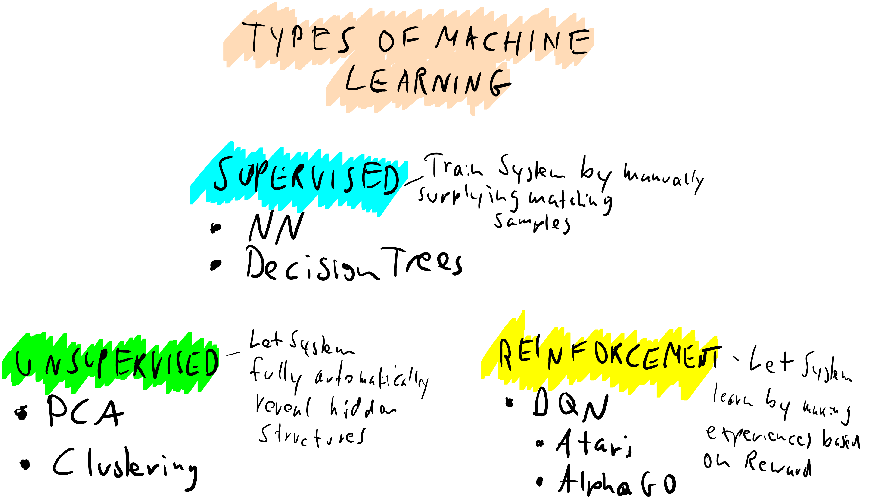
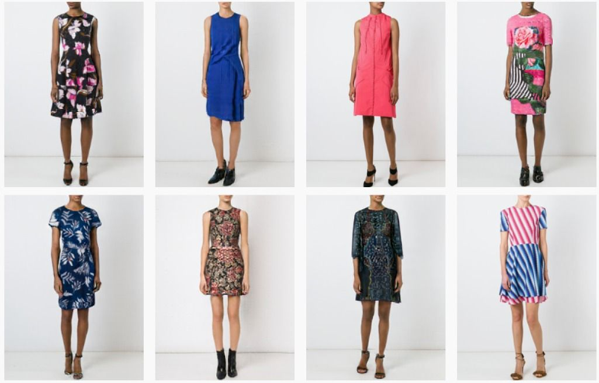

Einführung in Unsupervised Machine Learning
Oliver Zeigermann / @DJCordhose
http://bit.ly/d2d-unsupervisedPart I
Clustering
Three different categories of ML
Unsupervised Learning


Most Basic Algorithm
What do you think is the fundamental weakness of this approach?

Perfect result for k = 3

And this is the result for k = 10
You need to make a good guess of how many reasonable clusters there are
There are more issues with the k-means approach
Results for k-means
Comparing Clustering Algorithms
Choose your favorite!
Which one is our favorite?

Density-Based Spatial Clustering
A quick guess: What is the crucial factor here?
Part II
Dimensionality Reduction

Intuition in 3d
Rotate the camera to a position that reveals the most information
Turn your data to look at it from another perspective

https://twitter.com/Creatuluw/status/749151998415634432
https://twitter.com/planetepics/status/914792139309150208
Typical Use Case: Dimensionality Reduction


t-SNE
t-distributed stochastic neighbor embedding
Visualizing High Dimensional Data
UMAP: Alternative to t-SNE
Searching for a low dimensional projection of the data that has the closest possible equivalent fuzzy topological structure (Riemannian manifold).

MNIST Digit Dataset

Fashion Items
Bonus Part III
Autoencoders and GANs
A very short Introduction
Generating Celebreties
Trained for two weeks on a single high-end GPU on CelebA-HQ data set (images of celebreties)


State of the Art GAN (higher is better)

Visually-Aware Fashion Recommendation and Design with Generative Image Models
Only two of these images are actual images
https://twitter.com/goodfellow_ian/status/918900712901197824